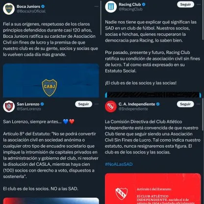

Luego de que el presidente Javier Milei aprobó las Sociedades Anónimas Deportivas (SAD), desde AFA y algunos clubes comenzaron a manifestarse en contra de la privatización de los clubes.
La medida fue incluida en el DNU anunciado este miércoles, para otorgar la posibilidad de que los clubes puedan elegir si quieren continuar como Asociaciones Civiles o cambiar a ser una SAD.
Esto generó controversia: por un lado, porque no se consideró de necesidad y urgencia este cambio en la normativa; pero además porque hace un mes los propios clubes votaron por unanimidad mantener el estatuto actual de la AFA que prohíbe su inclusión.
Marcelo Achile, vicepresidente de AFA, rompió el silencio y aseveró que esta normativa “se veía venir por las declaraciones de Milei y su relación con (Mauricio) Macri”, quien ha intentado en varias ocasiones imponer este modelo en el fútbol argentino.
“Se van a comer los clubes chicos y van a ir solamente por el negocio del fútbol”, enfatizó en diálogo con Radio 770.
Desde Defensores de Belgrano, club presidido por Achile, dejaron ver en las redes sociales su “oposición al inconsulto DNU del presidente Javier Milei mediante el cual se modifican y/o derogan normativas que hacen a la vida de los clubes de nuestra república y la sociedad en su conjunto”.
“Continuamos diciendo no a las sociedades anónimas deportivas, con la firme creencia de que nuestras instituciones deben ser entendidas como espacios de contención, solidaridad y transmisión de valores fundamentales para el entramado social de nuestro país y nunca como una empresa privada”, remarcaron.
Desde la Liga Profesional, el primero en manifestarse fue San Lorenzo. “El Artículo 8° del Estatuto del Club resulta bien claro: ‘No se podrá convertir la asociación civil en sociedad anónima o cualquier otro tipo de encuadre societario que implique la intromisión de capitales privados en la administración y gobierno del club, ni resolver la disolución del CASLA, mientras haya cien (100) socios con derecho a voto, dispuestos a sostenerla’”.
